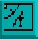

Amos Professional Manual Contents Index
the Object Editor
Otherwise use one of the automatic settings, as explained next.
Auto Off
 If you click on this icon, so it looks as if it has been pushed in, any of the hot spot pre-
sets can be used to position a hot spot for the current image. If it is not used, you will be
in an automatic mode, which means that every image summoned by [GET OBJECT] into
the Edit Window will have a hot spot automatically set to the last pre-set position.
If you click on this icon, so it looks as if it has been pushed in, any of the hot spot pre-
sets can be used to position a hot spot for the current image. If it is not used, you will be
in an automatic mode, which means that every image summoned by [GET OBJECT] into
the Edit Window will have a hot spot automatically set to the last pre-set position.
This is very useful if you want a whole range of Objects to have their hot spots in the same
place.
Hot Spot Pre-sets

There are nine icon boxes, each showing the position of a pre-set hot spot. If the Auto
option is off, you may select the hot spot of the current Object by clicking on any one of
these pre-sets. They are, in order of appearance, Top Left, Top Centre, Top Right, Centre
Left, Dead Centre, Centre Right, Bottom Left, Bottom Centre and Bottom Right.
Select a pre-set now, and check its setting by moving your cursor into the Zoom or Edit
Window. When you want to get back to the Main Menu, click the right mouse button in the top
line of icons, as usual.
Palette Colours
 This Major Option is used to mix new colours for your Object images to use. As soon as
this icon is selected, a large colour requester display appears over the Edit Screen,
alongside the vertical display of all the colours in the current palette. The colour
requester looks like this:
This Major Option is used to mix new colours for your Object images to use. As soon as
this icon is selected, a large colour requester display appears over the Edit Screen,
alongside the vertical display of all the colours in the current palette. The colour
requester looks like this: